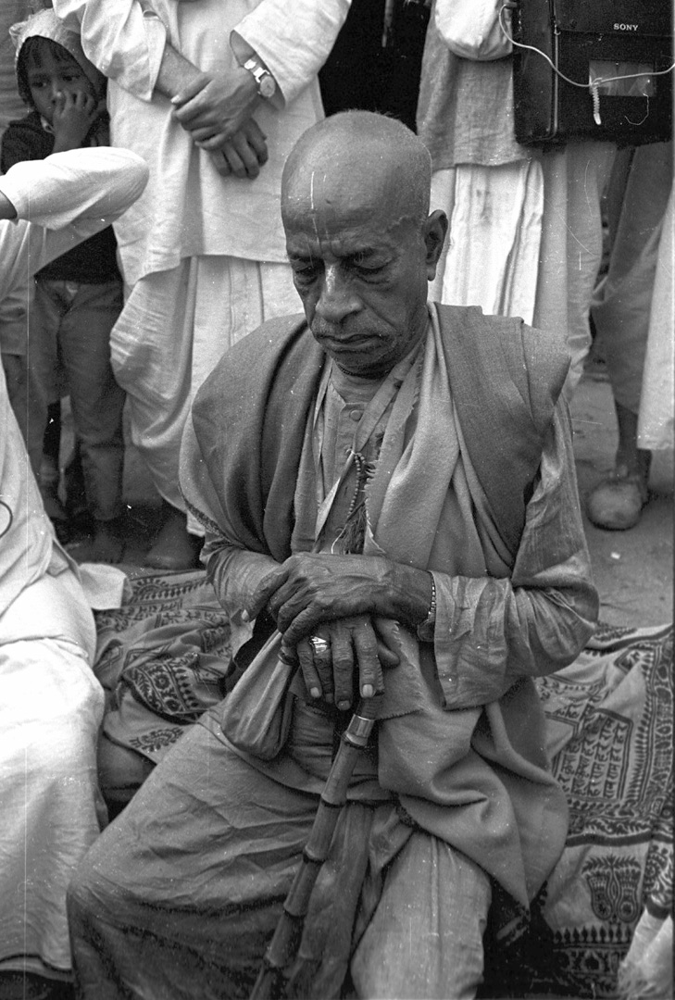

The Miracle Man!!
Srila Prabhupada – At various times people have called him a scholar, a philosopher, a cultural ambassador, a prolific author, a religious leader, a spiritual teacher, a social critic, and a holy man. In truth, he was all these things and more.
Over five hundred years ago, Lord Sri Krishna appeared as Sri Chaitanya Mahaprabhu in Navadvipa, a village in West Bengal. The purpose of His appearance was to inaugurate the Sankirtana Movement, the Yuga Dharma for this age of Kali. He declared that the chanting of His holy names would spread beyond the shores of India to every town and village in the world. He predicted that His commander-in-chief would appear to accomplish this mission.
Yes… Srila Prabhupada appeared to fulfill this prophecy.
On September 01, 1896, the day after Janmashtami (the auspicious appearance day of Lord Sri Krishna) in a little house in the Tollygunge suburb of Calcutta, a male child was born. His father, Gour Mohan De, and his mother Rajani, named him Abhay Charan (one who is fearless – having taken shelter at the lotus feet of Lord Krishna).
An astrologer prepared the horoscope for the baby and revealed: this child reaches the age of seventy, he will cross the ocean, become a great teacher of religion and establish 108 Krishna temples.
And this is exactly what happened.
Srila Prabhupada set out to America in 1965 and established the International Society for Krishna Consciousness at the age of sixty-nine. He travelled around the world fourteen times, established more than 100 temples of Krishna and initiated more than 10000 disciples into Krishna consciousness.
If you are interested in knowing more you can read the book Srila Prabhupada Lilamrita – As it is. This book is compiled from the lectures, conversations and correspondence of Srila Prabhupada.
A Historical Time Line of major events in the life of Srila Prabhupada is also available for your quick reference.
{kind=link}
Srila Prabhupada’s attempts to propagate Krishna Consciousness were not received well by the people in India. At the age of 69 (in the year 1965) he went to the United States of America and incorporated the International Society for Krishna Consciousness (ISKCON). In the next 11 years, he circled the globe fourteen times inspiring his followers, delivering lectures, and discussing the philosophy of Krishna Consciousness with all interested persons.
Srila Prabhupada arrived in the US during the decade of discontent; there was widespread dissatisfaction with America’s war with Vietnam. The American youth created their counter-culture popularly known as hippie culture. They were trying to break away from the status quo, searching for an alternative. Srila Prabhupada presented this alternative.
Srila Prabhupada brought the Hare Krishna Movement to the public eye by:
- chanting in the parks,
- distributing the Back to Godhead Magazine,
- conducting love feasts,
- delivering lectures from the Bhagavad-gita and Srimad Bhagavatam in a rented store-front.
Thus, he attracted many youngsters, who gradually became his disciples. Srila Prabhupada trained his disciples in the tradition of Deity Worship, to help them advance spiritually. The Supreme Lord appears in the form of Deities to give us an opportunity to serve Him; and by rendering services to the Deities with utmost care one can advance spiritually. When we are attracted to the beautiful form of the Deities, we will forget our attraction to material things; and by serving the Deities we will develop pure love of God and thus our lives will be successful.
To revive the Krishna conscious tradition, he envisioned God-centered self-sufficient farm communities based on the principles of Simple Living, High Thinking. In 1972, he started a gurukul in Dallas, Texas – an educational institution set up according to the traditional Vedic model. He established more than 108 temples and instructed his disciples that no one should go hungry within a 10 mile radius of an ISKCON temple.
Srila Prabhupada and His Books
Of all his contributions, Srila Prabhupada considered his books to be of utmost importance. These books present the timeless wisdom of Vedic scriptures in modern English with startling clarity and a convincing, simple eloquence that proves the relevance of the science of self-realization to our modern world and our own lives. These books have changed the lives of millions.
We have more resources here for your consumption.
- Srila Prabhupada and His Books
- Catalog of Srila Prabhupada’s Books
- Scholars appreciate Srila Prabhupada’s Books
The transcendental knowledge in his books forms the basis of the Hare Krishna Movement. Srila Prabhupada encouraged the devotees to distribute this literature profusely. These books are translated in most of the major languages and are widely distributed across the world.
Teachings of Srila Prabhupada
Srila Prabhupada is the spiritual ambassador who visited our planet to give us the message of Godhead and invite us to come back home – back to Godhead. We publish various articles on our blog on different aspects of his teachings. However, we realize our limitation in capturing all the teachings of Srila Prabhupada in a few pages of a website.
According to Srila Prabhupada, Krishna Consciousness is not an arm-chair philosophy or a part-time religion; it is a way of life. He presented the philosophy of Krishna Consciousness very extensively in his books and we request you to make it a habit to read Srila Prabhupada’s books and be benefited by them.